Part 3
Part 3
In my book Dynamic Structure Between AI And Biological Life, I outlined a dynamic structure between artificial intelligence and biological life and suggested that we can understand biological life by looking at artificial intelligence, and perhaps even, by doing so, discover the origins of biological life. In that work we looked at molar masses, and in this one we look at molar masses, atomic radii, and density and begin to lay a groundwork for a theory.
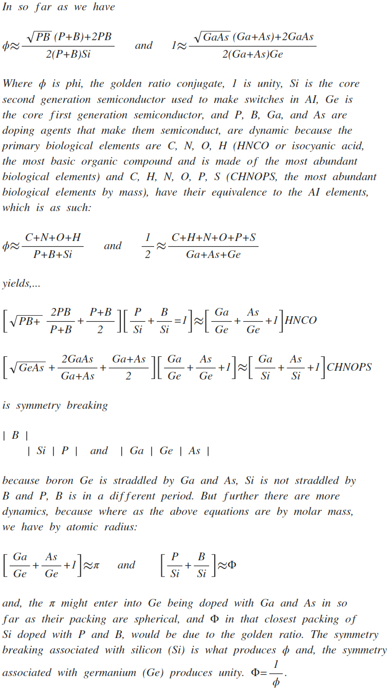

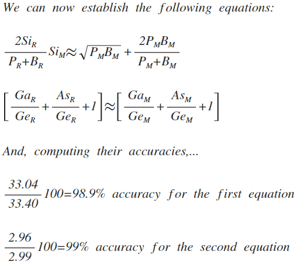
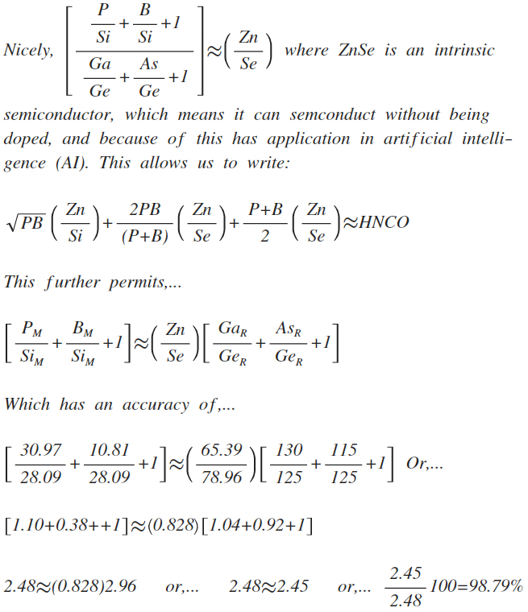
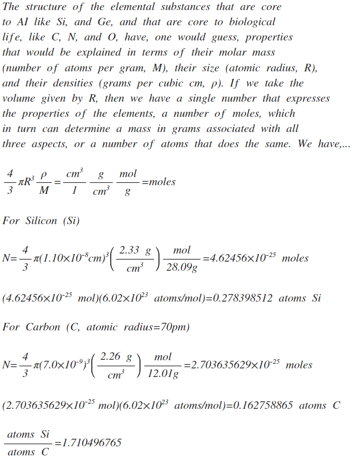
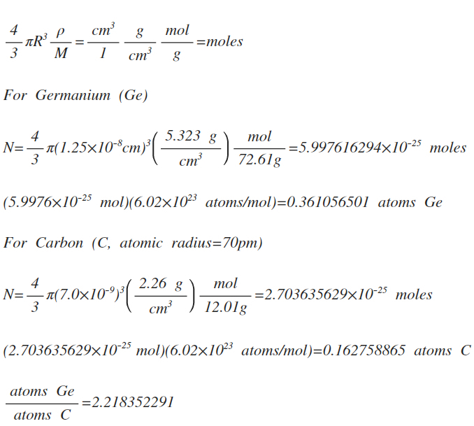
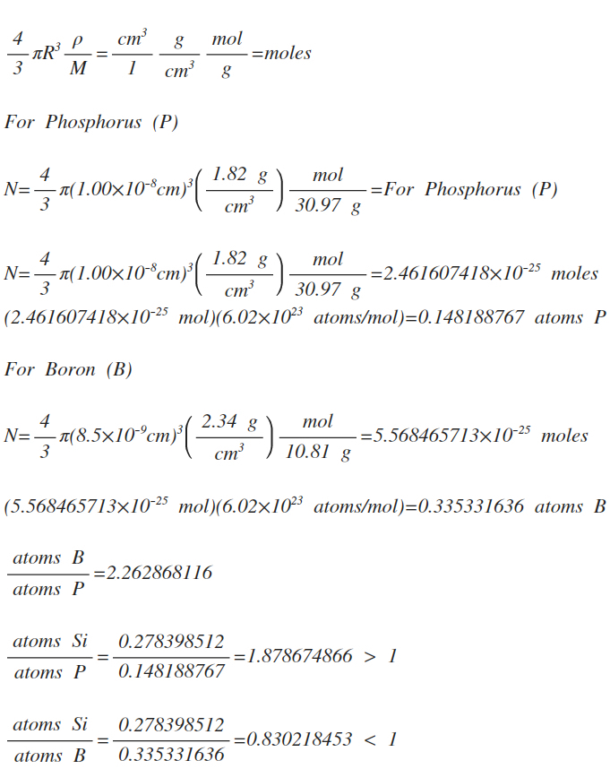
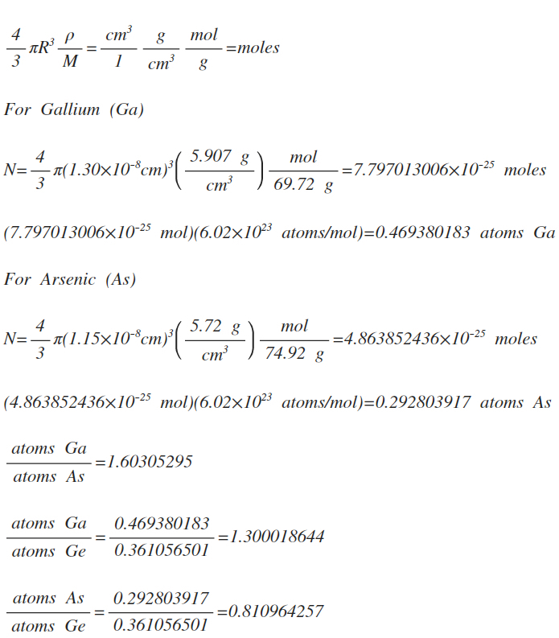
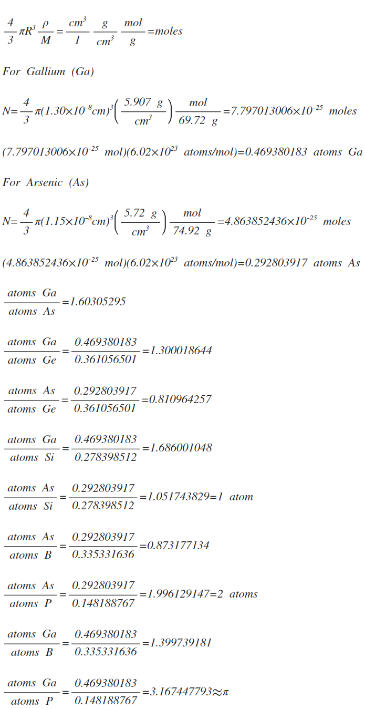
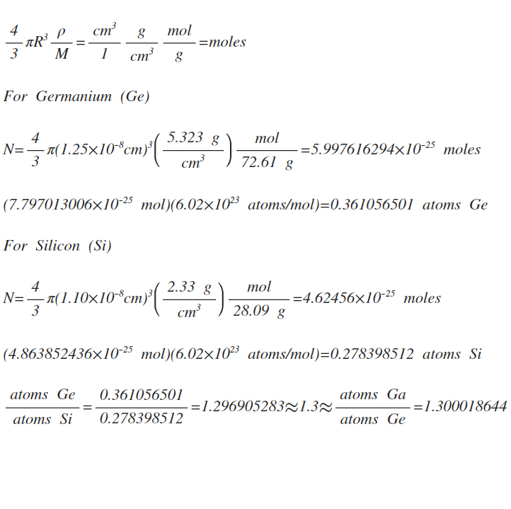
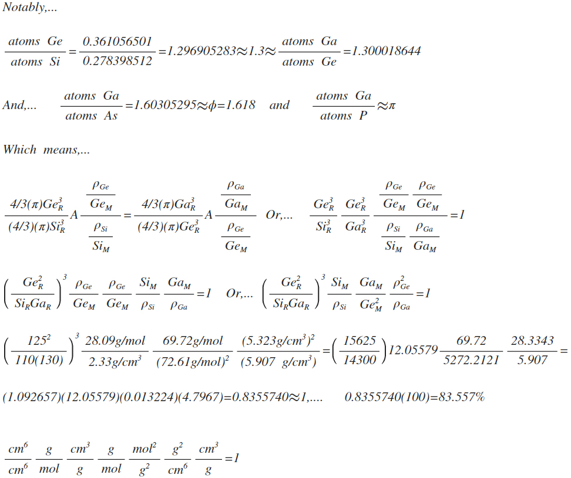
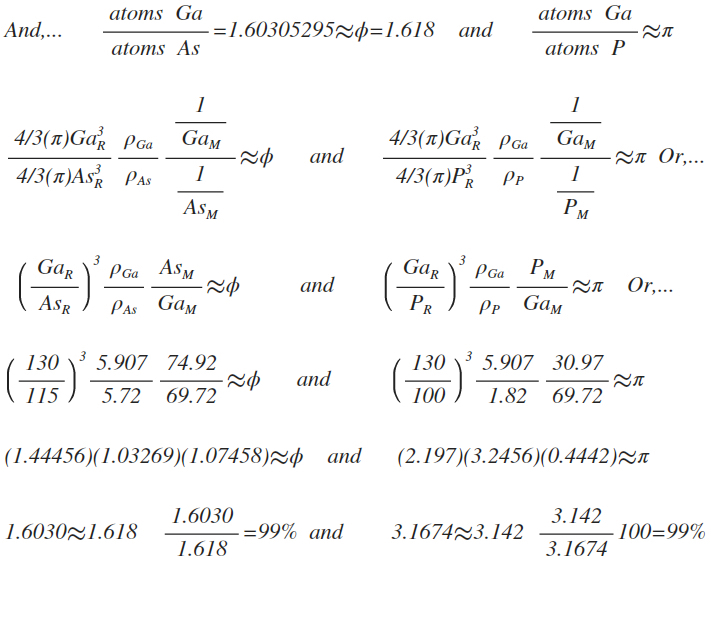
click here to go to the top of the page